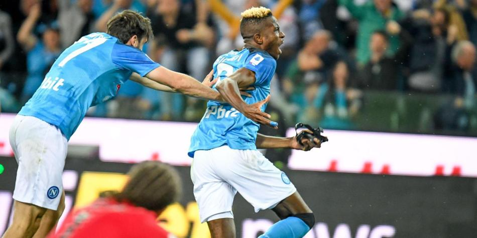
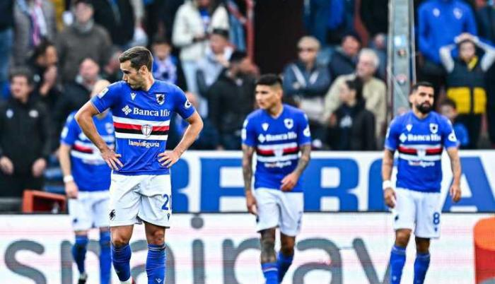

Inicio
Galardonados
Datos
Noticias
Opinion
ULTIMAS
NOTICIAS
Todas las noticias sobre Serie A publicadas. Información, novedades y última hora sobre Serie A.
ENLOQUECIDO
Mourinho pierde la cabeza tras perder la Europa League
TRISTISIMO
Ibra dejará al milan al final de esta
campaña
LAMENTABLE
La Roma cae por la via penal en la
final de la Europa League

ULTIMA HORA
El Napoli vuelve a ser campeon
de la Serie A

OFICIAL
la Sampdoria desciende a la serie B